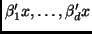
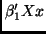
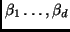
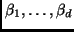

Regression is the study of the dependence of a response variable

on a collection

predictors collected in

. In
dimension reduction regression, we seek to find a few linear
combinations
, such that all the
information about the regression is contained in these

linear
combinations. If
is very small, perhaps one or two, then the
regression problem can be summarized using simple graphics; for
example, for

, the plot of
versus  contains
all the regression information. When

, a 3D plot contains
all the information.
Several methods for estimating
and relevant functions of
 have been suggested in the literature. In
this paper, we describe an
package for three important dimension reduction methods,
including sliced inverse regression or
sir, sliced average variance estimates, or
save, and principal
Hessian directions, or
phd. The package is very general and
flexible, and can be easily extended to include other methods of
dimension reduction. It includes tests and estimates of the
dimension
, estimates of the relevant information including
, and some useful graphical summaries as
well.